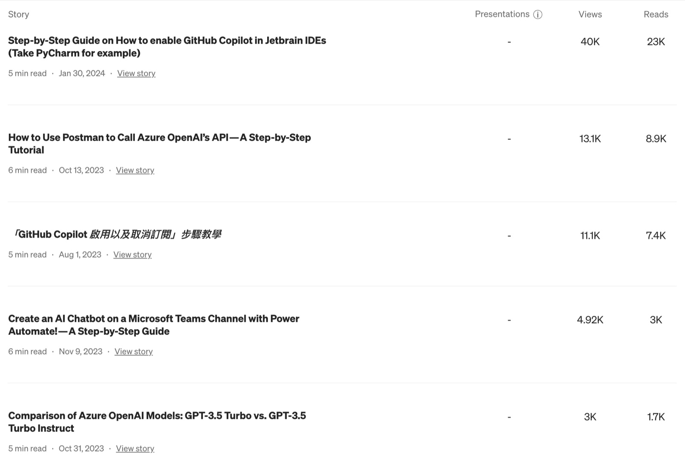
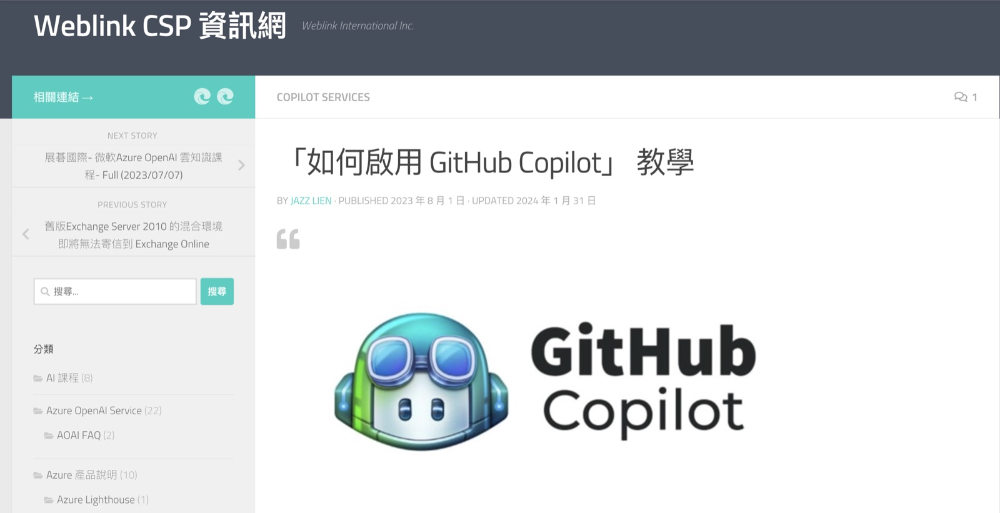
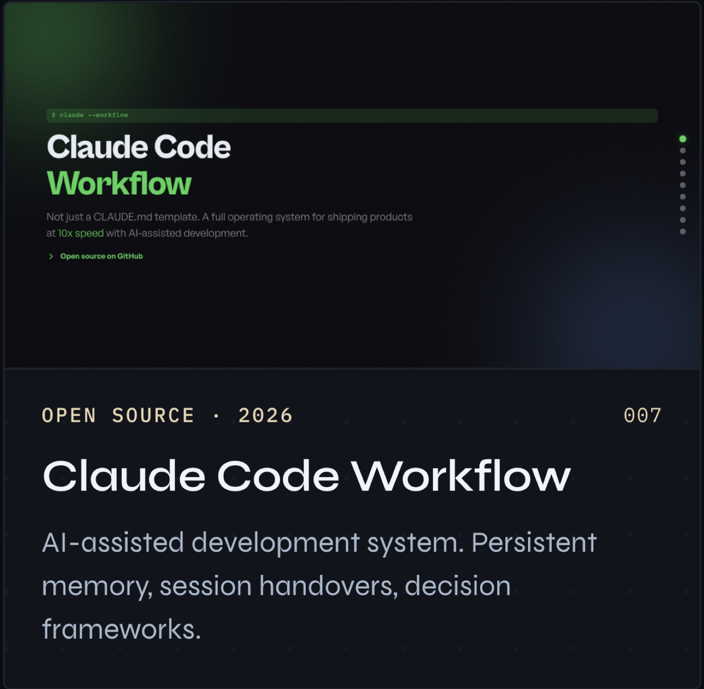

When AOAI was the only path to GPT models with enterprise compliance, I helped Taiwanese enterprises adopt it — internally as a sales engineer, and publicly as a bilingual technical writer.


Treats AI not as a chat tool but as a development partner with persistent memory. Six files, four protocols, one principle: every session builds on the last.

Knowledge transfer designed in from day one. CLAUDE.md + HANDOVER.md system is open-source proof — same documentation protocol I use with AI agents, I use with human teammates and clients.
Decisions are written, not remembered.
Own the decision, document the reasoning, flag the risk, move forward. Synchronize on next available cadence.
The cost of waiting usually exceeds the cost of correcting.